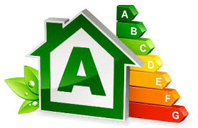

ESTOS SON ALGUNOS
DE NUESTROS SERVICIOS
PROYECTOS
Proyectos de Rehabiliatación, Reforma y Obra nueva.
- Proyectos de rehabilitación de viviendas y edificios.
- Diseño según programa de necesidades del cliente
- Asesoramiento en la elección de materiales e instalaciones.
- Asesoramiento en la contratación de la obra.
- Seguimiento de la obra proyectada y contratada.
- Proyectos de reforma.
- Diseño según necesidades y con adecuación a normativa vigente.
- Asesoramiento en la elección de materiales e instalaciones.
- Asesoramiento en la contratación de la obra.
- Seguimiento de la obra proyectada y contratada.
- Proyectos de Obra Nueva.
- Redacción Proyecto Básico y de Ejecución, materializando la inquietudes y necesidades del cliente.
- Asesoramiento en la elección de materiales e instalaciones.
- Asesoramiento en la contratación de la obra.
- Seguimiento de la obra proyectada y contratada.
- Redacción de Proyectos de instalaciones.
- Documentación final de obra.
DIRECCIONES DE OBRAS
La LOE estable que la intervención del Arquitecto Tecnico en la ejecución de la obra es obligatoria.
Beneficiese de contar con profesionales con experiencia que le orientaran para el exito de su proyecto, el Arquitecto Técnico o Aparejador de la dirección de la Ejecución Material de las obras.
- Asume la función técnica de dirigir la ejecución material de la obra y de controlar cualitativa y cuantitativamente la construcción y la calidad de lo edificado. segun las necesidades del promotor reflejadas en el proyecto técnico.
- Verifica la recepción en la obra de los productos de construcción, ordenando la realización de ensayos y pruebas si fuera necesario.
- Dirige la ejecución material de la obra comprobando los replanteos, los materiales y la correcta ejecución y disposición de los elementos constructivos y de instalaciones, de acuerdo con el proyecto y con las instrucciones del Director de la Obra.
- Consigna en el Libro de órdenes y Asistencias las instrucciones precisas.
- Suscribe el Acta de replanteo o de comienzo de obra y el Certificado Final de Obra (de obligatoria aportación al Acta de Recepción de la obra).
- Elabora y suscribe las certificaciones parciales y la liquidación final de las unidades de obra ejecutadas.
- Recibe los resultados de los ensayos o pruebas de servicio de materiales, sistemas o instalaciones, que le han de ser entregados, obligatoriamente, por las entidades y laboratorios de control de calidad de la edificación que, además, han de prestarle asistencia técnica.
SEGURIDAD Y SALUD
Los estudio de seguridad y salud, en sus dos modalidades, son documentos que se incorporan al proyecto de obra en el que se analizan y desarrollan todas las cuestiones realtivas a la seguridad y salud en el trabajo, que presenta la ejecución de una obra.
- ESTUDIO BASICO DE SEGURIDAD Y SALUD
- Generalmente para reformas de fachada u obras de pequeña entidad.
- Que no se cumpla alguno de los requisitos para realizar Estudio de Seguridad.
- ESTUDIO DE SEGURIDAD Y SALUD
- En obras de construcción donde:
- El presupuesto de ejecución por contrata sea > 450.760 €
- Duración estimada >30 días empleandose en algún momento >20 trabajadores simultaneamente.
- Volumen de mano de obra >500 jornadas
- Obras de túneles, galerías, conducciones subterraneas y presas.
- COORDINACIÓN
- Favoreciendo la aplicación coherente y responsable de la acción preventiva, la aplicación correcta de los métodos de trabajo y el control de la interacciones entre intervinientes.
- Servir de cauce para el intercambio de información entre empresas
- PLAN DE SEGURIDAD Y SALUD
- El contratista está obligado a redactar el Plan de Seguridad y Salud en base al Estudio de Seguridad.
- Le asesoramos en la redacción del documento para poder ser aprobado por el Coordinador y presentado ante la administración para la apertura del centro de trabajo.
CERTIFICADOS DE EFICIENCIA ENERGETICA

El nuevo Decreto RD 235/2013 por el que se aprueba el Procedimiento básico para la certificación de la eficiencia energética de los edificios entrará en vigor el próximo día 1 de Junio de 2013. En el Real Decreto se establece la obligatoriedad de la obtención del certificado energético a todos los edificios y viviendas que vayan a ser puestos en alquiler o venta a partir de Junio de 2013.
http://www.boe.es/buscar/doc.php?id=BOE-A-2013-3904
El Real Decreto establece que el certificado podrá obtenerse de manera individual, para una sola vivienda, o bien por bloques de edificios o viviendas unifamiliares análogas. Junto con la calificación energética,deberán incluirse medidas de eficiencia energética que permitan incrementar la calificación obtenida y, por tanto, la valoración económica del inmueble.